Introduction
This project aims to conduct diverse analyses on the city's crime rate, with the primary goal of benefiting both residents and students at UB by identifying areas and months as either 'safe' or 'unsafe.' Additionally, the project summary will provide valuable insights to relevant departments, aiding them in implementing more stringent laws and enhancing overall security measures.
Importing packages and libraries
In this project, essential tools were utilized for comprehensive data analysis and visualization. The Pandas library (aliased as pd) enabled efficient data manipulation, while SQLite facilitated structured database management. Smooth integration with the SQLite database was ensured through the Error module.
Additionally, the csv module, with an increased field size limit (100,000,000), was vital for processing extensive datasets effectively.
For data visualization, the Matplotlib library, specifically matplotlib.pyplot (aliased as plt), was employed to create diverse visualizations, such as graphs and charts. The %matplotlib inline command enhanced accessibility by displaying visualizations directly within the Jupyter Notebook or compatible environments.
In summary, the integration of Pandas for data manipulation, SQLite for database management, csv module for handling large datasets, and Matplotlib for data visualization significantly strengthened the project's analysis, allowing meaningful conclusions and insights to be drawn from the city's crime-rate data.
Data Cleaning and Preprocessing
In this project, the initial step involved importing a dataset titled "Crime_Incidents.csv" into a Pandas DataFrame named df_all. This dataset comprised 287,308 rows and 29 columns, containing various details such as case numbers, incident dates, types, descriptions, geographical information, and administrative details. Upon inspection, it was observed that several columns, primarily related to census data and unique identifiers, were unnecessary for our analysis. These columns, including 'Incident ID' and several census-related identifiers, were dropped from the DataFrame using the 'df_all.drop()' method.
After the removal of unnecessary columns, the dataset was refined to 17 columns. Following this, null values within the dataset were addressed. Rows with null values in any column were dropped using the 'df.dropna()' method, which resulted in a cleaned dataset comprising 282,316 rows.
Additionally, specific rows were further filtered out to enhance the dataset's quality. Rows with 'UNKNOWN' values in the 'Neighborhood', 'Police District', and 'Council District' columns were dropped to ensure the data used for analysis was accurate and reliable.
To summarize, the cleaning process involved importing the dataset, dropping irrelevant columns, removing rows with null values, and filtering out specific rows with 'UNKNOWN' values. These steps were executed using various Pandas methods, ensuring the dataset was well-prepared and suitable for in-depth analysis.
Inserting information into normalized.db.
In this project, several functions were developed to create and populate a SQLite database named "normalized.db" with the cleaned and processed crime data. These functions were designed to streamline the process of database creation and data insertion. Let's break down the key components of this code:
1. Database Connection and Table Creation Functions:
'create_table(conn, create_table_sql, drop_table_name=None)': Creates a table in the database based on the provided SQL schema. If 'drop_table_name' is specified, it drops the table with that name before creating a new one.
'execute_sql_statement(sql_statement, conn)': Executes a SQL statement and returns the fetched rows.
2. Data Insertion Functions:
Functions like 'create_neighborhood(df_n, db_file)', 'create_parentincidenttype(df_n, db_file)', 'create_policedistrict(df_n, db_file)', 'create_councildistrict(df_n, db_file)', and 'create_description(df_n, db_file)' create tables for neighborhood, incident type, police district, council district, and description, respectively. They then populate these tables with unique values from the corresponding columns in the dataset.
'create_crime(df_n, db_file)': Creates a "Crime" table in the database. It references foreign keys from other tables (IncidentType, Description, Neighborhood, PoliceDistrict, and CouncilDistrict) and inserts relevant data into the table.
3. Lookup Dictionary Functions:
The code first creates tables for neighborhood, incident type, police district, council district, description, and finally, the main "Crime" table. Data from the dataset is appropriately mapped to these tables, ensuring data integrity and referential integrity constraints. The resulting database provides a normalized structure for efficient querying and analysis of the crime data.
These functions collectively establish a robust database system, making the dataset ready for in-depth analysis and generating valuable insights for stakeholders and researchers.
Neighborhood Table
Incident Type Table
Police District Table
Council District Table
Description table
Fetching data from tables
SQL queries were executed on the normalized database and the following insights were obtained from the crime data:
1. Crime Count by Month:
The query grouped the crimes by month, converting the incident date to corresponding month names. The result showed the total number of crimes reported each month, providing a monthly overview of criminal activities.
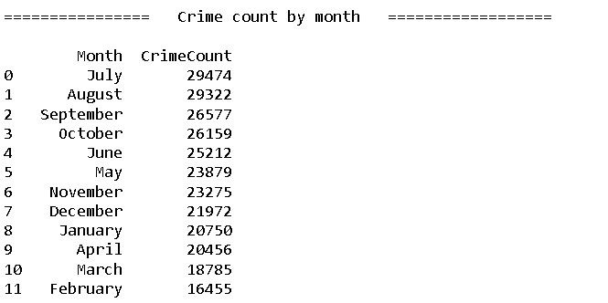2. Crime Count by Hour:
The query grouped the crimes by the hour of the day, displaying the total number of crimes reported during each hour. This information gives a clear picture of the distribution of crimes throughout the day.
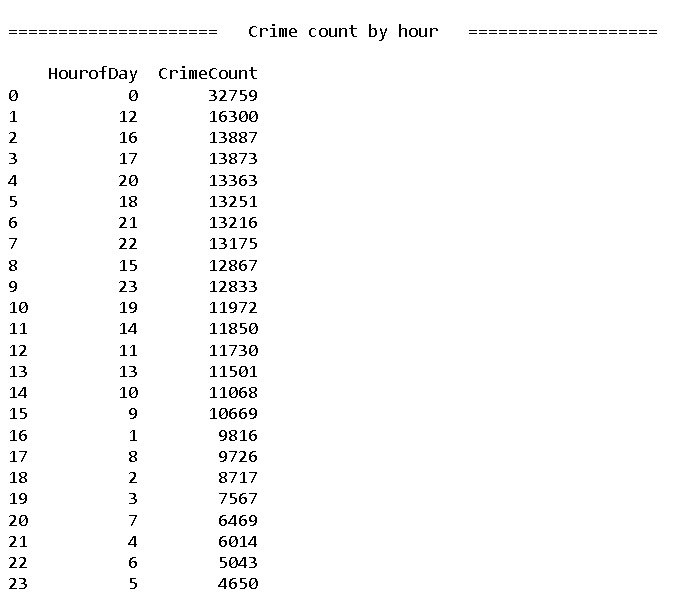3. Crime Count by Day of the Week:
The query grouped the crimes by the day of the week, providing insights into the frequency of crimes on different days. It highlighted patterns in criminal activities based on weekdays.
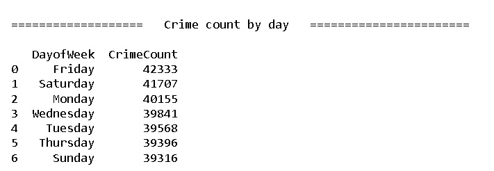4. Crime Count by Neighborhood:
The query grouped the crimes by neighborhood, displaying the total number of crimes reported in each neighborhood. It showcased the relative safety levels across different areas within the city.
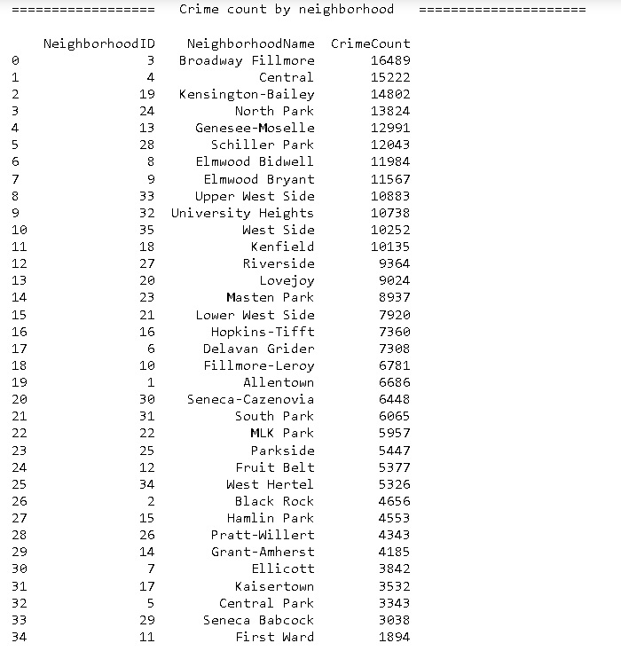5. Crime Count by Police District:
The query grouped the crimes by police district, indicating the total number of crimes reported in each district. It offered an understanding of law enforcement challenges and crime distribution across different police jurisdictions.
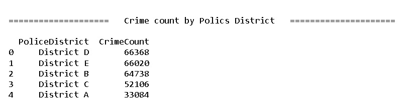6. Crime Count by Incident Type:
The query grouped the crimes by incident type, showcasing the total number of occurrences for each type of crime. It provided insights into the prevalence of different criminal activities within the city.
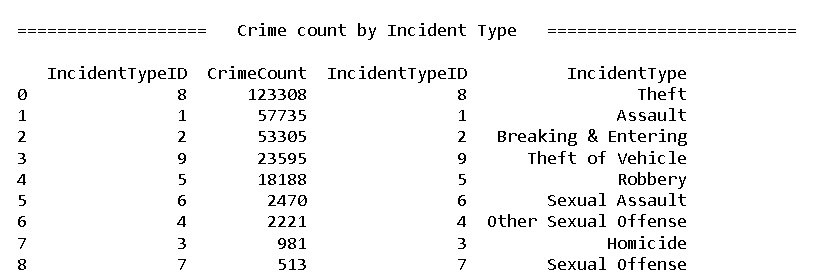These analyses offer a comprehensive overview of crime patterns, enabling stakeholders and law enforcement agencies to make data-driven decisions. They help identify trends, allocate resources effectively, and formulate targeted strategies to enhance public safety and security.
Visualizations
Incident Type Pie Chart
A pie chart was created to represent the distribution of crime types based on incident data. Each slice of the pie chart corresponds to a specific incident type, with the size of each slice proportional to the percentage of that particular crime type in the overall dataset. Different incident types are distinguished by various colors. The chart offers a visual representation of the relative prevalence of different types of crimes, allowing for a quick and intuitive understanding of the crime composition within the analyzed dataset.
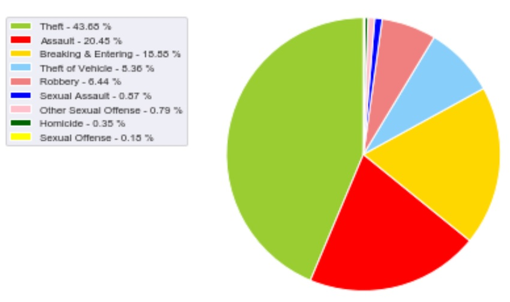Hourly Crime Count Bar Plot
A bar chart representing the hourly crime count was created based on the data analysis. The x-axis displays the hours of the day, while the y-axis represents the corresponding crime counts. The chart provides a visual representation of how crimes are distributed throughout the day. Peaks in the chart indicate periods with higher criminal activities, offering valuable insights into the timing patterns of incidents. This visualization aids in understanding when law enforcement efforts might need to be intensified and when certain areas might require additional security measures.
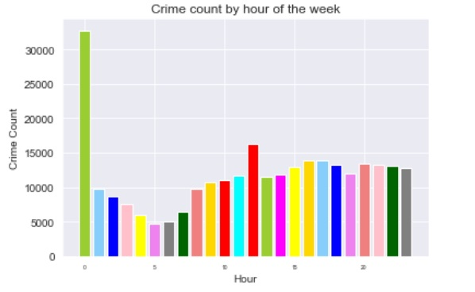Daily Crime Count Bar Plot
A bar chart was generated to visualize the daily crime count based on the day of the week. The x-axis represents the days of the week, while the y-axis indicates the corresponding crime count. The bars are color-coded for better distinction. This visualization provides a clear and concise representation of the variation in crime incidents throughout the week, offering insights into any notable patterns or trends in criminal activities over different days.
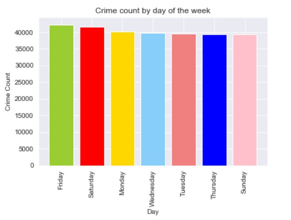Monthly Crime Count Bar Plot
A bar chart depicting the monthly crime count was generated based on the analysis of the dataset. The chart illustrates the number of reported crimes each month, offering a visual representation of crime trends over the course of a year. The x-axis represents the months, while the y-axis indicates the corresponding crime counts. The chart provides a clear and concise overview of the variation in crime rates from month to month, aiding in the identification of potential patterns and fluctuations in criminal activities throughout the year.
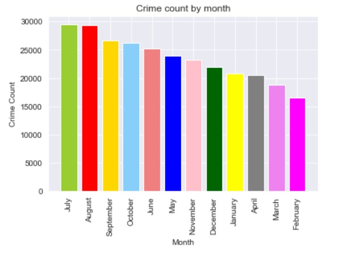Neighbourhood - Crime Count Bar Plot
A bar chart was generated based on crime count data obtained for different neighborhoods. The chart displays the number of crimes reported in each neighborhood, providing a visual representation of crime distribution across various areas. Each bar represents a neighborhood, and its height corresponds to the respective crime count. This visualization offers a clear comparison of crime incidents in different neighborhoods, aiding in the identification of high and low crime areas within the city.
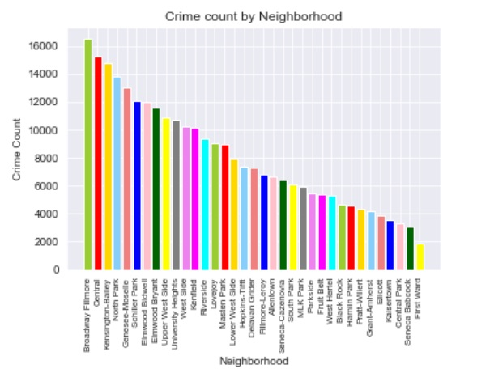Police District - Crime Count Bar Plot
A bar chart was generated to visualize the crime counts across different police districts. The x-axis represents the individual police districts, while the y-axis indicates the corresponding crime counts. This graphical representation provides a clear overview of the relative crime rates in each police district, enabling stakeholders to identify areas with higher or lower criminal activities. The visualization serves as a valuable tool for law enforcement agencies and policymakers, aiding in the allocation of resources and the development of targeted crime prevention strategies.
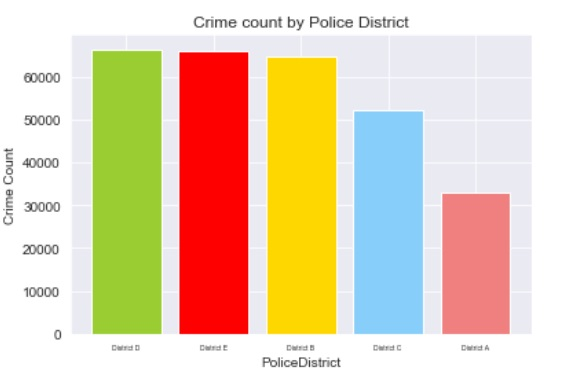Conclusion
The prevailing crime in the city is theft, closely followed by assault incidents. Notably, criminal activities reach their peak precisely at midnight, indicating a significant spike in reported crimes during the late hours. Furthermore, Friday emerges as the day with the highest crime count throughout the week, suggesting a notable surge in incidents at the end of the workweek.
Analyzing the data over the course of the year, it becomes evident that the transition from late summer to early fall witnesses the highest crime count. This seasonal pattern indicates a potential correlation with changing weather conditions or social behaviors during this period.
Delving into neighborhood-specific data, Broadway Fillmore and Central Terminal areas emerge as the most crime-prone neighborhoods within the city. Conversely, Seneca Babcock and First Ward are statistically identified as the safest regions in Buffalo, showcasing significantly lower crime rates.
Additionally, when examining law enforcement jurisdiction, Police District D stands out with the highest number of reported incidents. This observation underscores the importance of focusing on this district to implement targeted strategies aimed at crime prevention and community safety.
These findings provide valuable insights for local authorities and policymakers, enabling them to prioritize resources, enhance surveillance, and design tailored interventions. By understanding these patterns, law enforcement agencies can effectively allocate personnel and resources to areas with higher crime rates, fostering a safer environment for the residents of Buffalo.